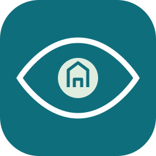

跳到原型内容

筑瞳设计室
阶段7A · OpenHarmony 原生 App 设计交接
App 原型
图形资源
传播模板
返回 Web 工作台
设计原型 · 所有数值为示例 · 不连接 API、不上传照片、不提交业务。实际 ArkUI 原生工程在阶段8实现。
手机 · 390px 设计参考
交互原型，非真机截图
筑瞳 · 现场守护
工作台
巡检员
原型示例 · 硬件输入模拟 · 未连接服务器